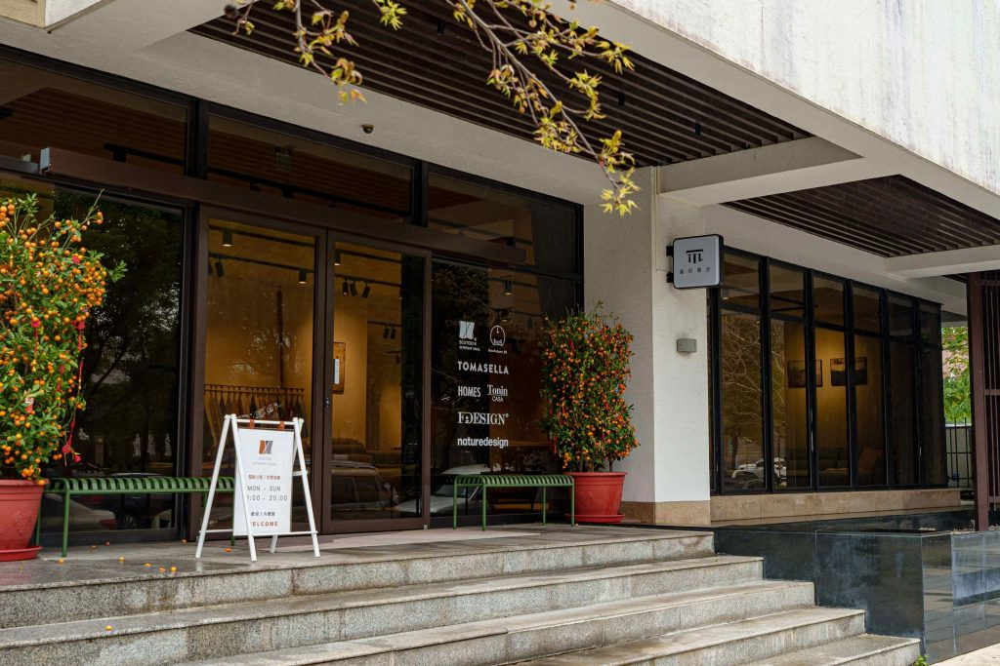
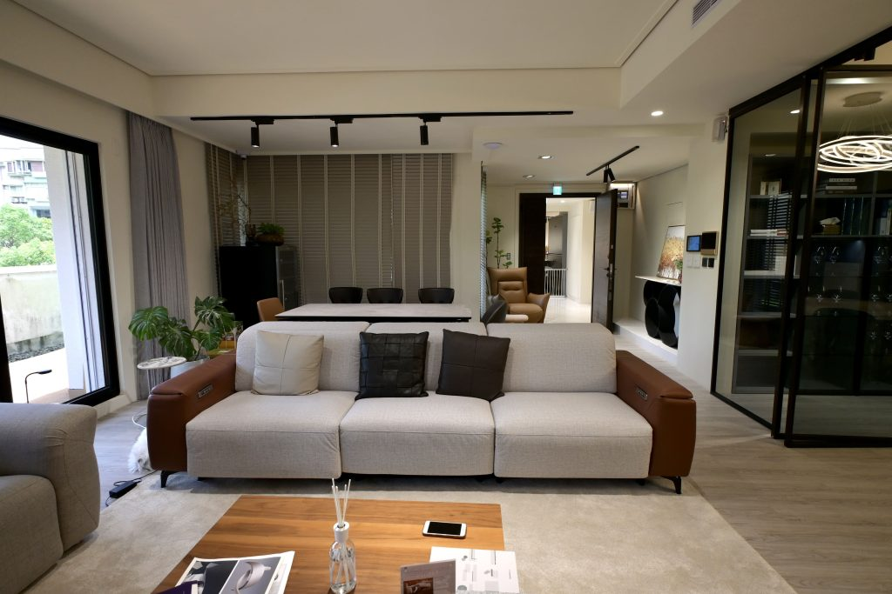

把複雜的事，拆成下一步
將零散訊息、模糊需求與待辦整理成有順序的行動；先看清楚問題，再決定 AI 可以協助哪一段。
創意設計工作者的 AI 實戰沙龍
從實際經驗出發，學會用 AI 工作流，
梳理複雜的工作與生活，留回創作與呼吸的空間。
經營一間工作室、帶領一個設計團隊，或獨自完成每一份創作，你的日常往往同時裝著很多事：客戶的訊息、還沒成形的靈感、待整理的資料、提案的期限，以及工作之外的生活安排。
這場沙龍由 David Ni 從實際使用 AI 的經驗出發，拆解一件事如何從混亂走向清楚：怎麼整理需求、提供脈絡、分配步驟，再檢查結果，形成可以反覆使用的工作流。
我們會一起操作、討論與調整。讓 AI 接住適合交付的整理與初稿，把你的注意力留給設計判斷、重要的關係，以及生活裡真正想留下的片刻。
天衍互動創辦人暨執行長 · 創意科技與 AI 應用實踐者
以 CyberMonk 為個人創作身分，David 的實踐橫跨光影藝術、沉浸式體驗、互動科技與 AI 創作應用。身為創意科技公司的經營者，他同時面對創作、提案、專案協作與營運中的複雜問題，也持續探索如何讓 AI 成為工作裡真正用得上的夥伴。
在這場沙龍裡，他將從實際使用 AI 的經驗出發，分享如何整理需求、釐清脈絡、拆分任務，再把有效的方法串成可重複使用的工作流。從靈感到提案，從工作到生活安排，一起練習讓繁複的事情更有條理。
你會看見示範，也會帶著自己的問題動手做。David 將陪你檢查結果、修正卡點，找到適合自己的使用方式，把更多注意力留給創意、判斷與生活。
從一個真實困擾開始，
練成能用在自己身上的工作方式。
將零散訊息、模糊需求與待辦整理成有順序的行動；先看清楚問題，再決定 AI 可以協助哪一段。
練習交代角色、目標、素材與限制，透過追問和修正，逐步得到更貼近需求的結果。
從資料整理、概念發想到文案與簡報架構，讓不同環節接得起來，保留自己的觀點與美感。
將好用的指令、檢查點與步驟整理成模板，減少每次重頭開始的心力，也用在日常安排與資訊整理。
每週四 13:00–17:00
經驗拆解 → 示範 → 實作 → 回饋
建議帶著同一個真實案例參與三週，讓每次練習都接續上一次的成果。從整理問題、完成創意表達，到建立自己的可重用流程。
從生活與工作中最讓你分心的一件事開始。看 David 如何交代情境、整理素材、拆分任務，讓 AI 成為一起釐清問題的夥伴。
課前小準備：選一個你想理順的工作或生活問題。
一張個人任務地圖＋一份可重用的情境指令
接續第一週的案例，練習把需求、資料與靈感串起來。讓 AI 協助整理與發展，由你掌握方向、取捨與最後的表達。
課前小準備：帶上第一週成果與可分享的案例素材。
一份案例提案草稿＋一條創意發展工作流
把前兩週的練習整理成能持續使用的流程。從客戶溝通、資料整理到生活規劃，找出適合交給 AI 的步驟，也留好需要自己判斷的關卡。
課前小準備：帶上前兩週成果，以及一項想持續改善的日常任務。
一份個人 AI 工作流手冊＋一週實踐清單
以上為三週課程規劃；現場會依參與者的案例與進度調整示範及練習節奏。
不用等一切準備好才來。讓這三個午後，成為你開始整理日常的起點。
現場以跟著操作為主，筆電更方便整理資料、切換視窗與保留成果；手機可輔助使用。
課前先測試帳號登入與瀏覽器，讓現場時間留給實作。先使用你熟悉的工具即可。
可以是提案、客戶需求、待辦整理，或讓你覺得繁瑣的生活安排。請使用可公開或已去識別的資料。
帶著前一週成果回來，記下指令、修改與心得，逐步累積自己的工作流。
義居雅舍 italife
臺北・內湖
讓學習，也是一段值得期待的午後。在義居雅舍的義式生活體驗空間裡，我們從眼前的真實問題出發，交換經驗，讓工作的方法與生活的質感一起被照顧。


場地實景照片來源：義居雅舍 italife 官網 ↗。現場陳設與活動座位以當日安排為準。